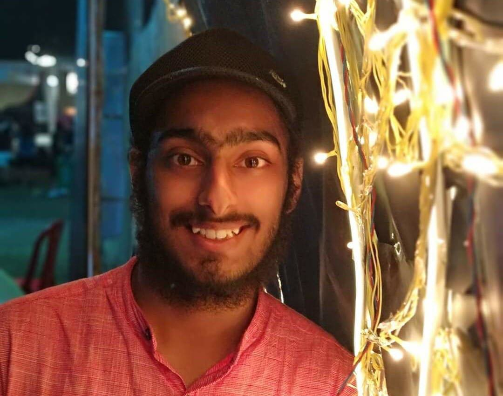

March 22, 2019
After rigorous efforts of convincing by Vartika Gupta and Apoorv Goyal, I’m finally sitting down to write this. Not so surprisingly, I’m writing this on the day of the Junta Curfew, sitting ideally in my room bored to hell, waiting for campus life to start again like most of you. Well, life has to be a bit crazy sometimes. Otherwise, it’s just a bunch of Thursdays strung together, isn’t it? But then again what’s the point in not utilising this time well preparing for the important internship season lying ahead that will start ticking once we get out of these quarantines and get busy in the hectic schedules again (trust me no one knows it better, how much inertia it is :P, but I can tell you the preparation will be worth it).

MY PROFILE AT A GLANCE:
8.7 CPI (not sure how to classify it but it’s decent enough to let you take shots at most of the companies)
No internships till then: will tell later how does it affect your profile, stay tuned :P
Manager, International Relations, Academics and Career Council
Manager, Media and Publicity, Antaragni’19
Core experience in the form of two projects
Some non core projects as well but not relevant here
Here is the link to my resume if anyone wishes to check it out:
Resume (don’t judge me on the aesthetics, it was not the final submission)
PRE-INTERN PREPARATION :-
Filling up your Armoury
I explored data analytics and core engineering options in my 2 years (it’s evident by my projects), but I wanted to explore finance as well, after all, more weapons in your arsenal never hurt. It was difficult for me to choose a priority order for all this, since each had its own perks. The part that I was clear about though was that I will not apply for software, coding & trading profiles, which was not the best choice since a great number of companies shortlist on the basis of coding tests [dm me for reasons and interesting stories behind my choice]. I had a research intern in mind as well, but my summer project taught me that I am stitched with a different fabric.
I started meeting and talking to seniors who have already interned in these profiles in my 4th semester to know about the pros and cons of different profiles, and trust me, it really helped me sort out my priorities. After pondering over my choices according to my profile which included CPI, core projects and PORs, I decided ITC/HUL to be my best shot.
Getting Suited Up for the Challenge
Well…. It took me my 4th semester to come out of the lethargy towards preparation, and in the process, it was too late to look for 2nd year internships and hence I decided to make the best of what I had here at IITK. I wanted a good core project on my profile to better my chances [keep in mind, it's not a necessity, wait for upcoming blogs to get that perspective as well :’)], so I decided to stay back on campus in summers and took up two projects, one core and another one with IITK Consulting Group along with 2 courses. I know what you guys are thinking, but it’s not much! You will still have a life (I watched Suits twice during summers, go watch it if you haven’t) xD.
GD PREP
Along with this, I formed a group with some of my friends at the start of my summers to prepare for
Group Discussion. It is really important if you have your eyes on ITC/HUL/Nomura or any other core or management role. For ITC/HUL, GD is the stage where a lot of students miss out since only 20-25 students get shortlisted among 70 students shortlisted through resume. We started with GDs moderated by seniors and once we got used to the process we met once every week to practice and it helped a lot on the ‘THE’ day which I will come to later.
You may refer to the following link for sample GD topics:
GD Topics
INTERVIEW PREP
ITC has 2 rounds of interviews, technical and HR; but really both the interviews are a 2-dimensional vector formed with tech and HR as their basis (for all Mth peeps reading, since ITC has a profile for Mth too). I suggest you start with contacting seniors to know the how abouts of these interviews, and then prepare accordingly, otherwise the preparation becomes directionless. During the first half of summers I revised core courses - Thermo, Fluids majorly, without knowing what exact getaways I need to take from them. Nonetheless, after talking to
Chaapu seniors like Krishna, Pranshu and Kshitij, I realised what all topics I need to go through. One important thing that everyone should keep in mind, while preparing for the interviews is that you need to know your resume well. When I say well, I mean to the level that you should know each point on it upto 3 levels of depth because most of the interviews run around your resume and hence, you can’t afford to miss out on that.
After talking to seniors and searching through different websites I made a database of common technical, HR round questions and prepared answers to them along with the expected cross questions, this process goes better if done with friends[isn’t everything? :’)] since it helps you see loop holes in your answers and makes the process less tasking.
Technical round preparation usually involves going through basics of courses like thermodynamics, fluids which includes cycles, Bernoulli's theorem, pumps, practical applications of basic principles related to these topics and some basic theorems. Also, repeating what I stated above, you should know your projects and PORs inside-out, well at least the part you write down, since your projects form a major part of your tech round.
I couldn’t spend much time preparing for finance and data analytics and profile in summers due to crunch of time (yeah yeah I know I shouldn’t have watched Suits twice but..) and lack of proper guidance on what should I study, that’s why directed preparation is so important, isn’t that why we all attempt previous year papers (well…, you should if you don’t). I couldn’t prepare much for the technical parts of these profiles and just prepared my projects well, so, suggest everyone aiming for more than 2 profiles start contacting seniors and preparing as soon as you can because unlike midsems and endsems you won’t be able to cover up everything on the last day.
The War Day
9th of August, 2019 was the day when all the shortlists were supposed to be revealed. I applied for four Day 1 companies ITC, HUL, Gartner, Deutsche Bank out of which I got shortlisted for ITC and Gartner. HUL was a disappointment. As I knew I was not prepared for Gartner, and hence I had only one shot at what I was confident of, ITC… But as Harvey Specter said
‘When you’re backed against the wall, break the goddamn thing down’, you need to stay motivated and believe in yourself. Enough of the motivational stuff, we have CS for that :P, coming to how the GD and Interviews went:
GROUP DISCUSSION
ITC GDs are generally based on a ranking of characters or the importance of things in the given case. There are fixed cases from which they ask each year. You can google the common GD topics or refer to the link put above. Because of the practice GDs, each one of us developed their own frameworks of approaching a GD and all I had to do was stick to what I had practised and that was a huge plus point for me. Remember, the practice GD we did with seniors, luckily I got a similar topic for discussion and all I had to do was give direction to the GD and take the group along (which is not easy with everyone ready to speak up their views). You need to be careful that you don’t undermine anyone during the GD and respect everyone’s views, and not get defensive while defending your point.
We (AnC ofcrs :p) will try organising Mock GDs for you guys to make you familiar with these points but I suggest everyone to try out GDs among your friends because it also helps you structure your thoughts well and improve your soft skills.
GD Gyaan: Never initiate a discussion for the sake of it, giving a direction to the discussion shows your skills and increases your chance of selection but only if you are able to characterise the case well for the other group members to understand and follow up on what you said.
The results of GD were announced at around 3 in the night and though I wasn’t confident about my shortlist, I kept my spirits high thanks to my friends. As the shortlist was released I had my interview slot up on the top at 7:30 in the morning and I made a choice which I won’t recommend to anyone xD. I went to my interview with no sleep and spent the remaining hours trying to brush up my preparation at the last minute which not surprisingly, was of no help. So make sure you get proper sleep before your interviews otherwise you may face a lot of unrest.
During those waiting hours the next day, outside the interview room as I kept sitting for 3 hours, yeah.. Nothing starts on time except the 8am lectures :(, I felt the
Closing walls and ticking 'Clocks'! as I heard coldplay to calm me down, trust me talking and songs helps a lot during this time along with preparation of course xD.
INTERVIEWS
Round-1 Interview:
The first round of interview had a 3-membered panel – probably one HR and 2 people from tech one of them was an alum of IIT-K. They started with asking about my background right from family to college life. Contrary to my expectations, rather than giving me time to describe myself they directly moved to my core project and grilled me for about 15-20 minutes on it. They asked me following questions on my project:
Below are the questions (in order) they asked me:
What was your motivation behind taking this project?
What is the goal of your project?
How did you go about executing it?
(a follow up to the previous question) Your project looks fairly simple. Did you face any complications in it?
Who was the one who pitched the major solution to the problem you or your prof?
Tell me everything you did in your project in 1 min? (they literally timed me xD)
It’s an ongoing project, where do you see this project headed in future?
Before the project they asked me the following questions:
Why did you choose mechanical engineering? Was it a choice or trend following?
Your interests align with chemical engineering as well, so why mechanical?
What is the biggest hurdle that you have overcome?
What is your biggest achievement except JEE because you have written about that in your form.
(They get a form filled before the interview and read your application before the interview. So, prepare those answers well too)
After the project they asked me the following questions to stress test me:
Your profile is highly research based. Are you sure you want to go for an industry intern?
Are you comfortable if you get completely manufacturing based work? (Since my resume was POR heavy)
Compared to everyone my first interview was shorter it lasted around 30 min, followed by a 10 min long discussion (I have no clue about what xD)
Round-2 Interview:
The second round of interview had 2 senior members, one of them being the Head HR from the company and both looked knowledgeable in every aspect. I got pretty relaxed till then because I thought I had prepared well for the HR interview and was ready to guide the interviewer in my strong areas, this is important, you should never let the interviewer take control of the interview. They moved on and asked me the following questions:
Do you have any other interviews after this? (I was a bit startled by this one)
Are you excited for that interview?
What other companies did you apply for?
You must have a hectic schedule here, how do you cope up?
What is your favourite subject? And then some follow-up questions on it.
What do you enjoy doing on campus? (I answered debating and then they followed up with 4-5 min on DebSoc though it was no where on my resume)
What would you want to take away at the end of 4 years from here when you graduate? (I answered it around International Relations and then they followed up with 5-6 questions on it)
Tell us about yourself? (yeah.. It came in the middle out of nowhere)
Questions around my projects again
How do you work in a team and handle conflicts?
Why do you want to work for ITC?
What sort of profile would you prefer? ( I answered Supply Chain and then they grilled me around that for around 2-3 minutes)
Aaandd after this wait for results started, I was roaming there for more than 3 hours talking to people, but in the end the feeling of contentment was unparalleled.
“The only time success comes before work is in the dictionary.”- Harvey Specter [uhh.. Go watch Suits :’)]
(ᵔᴥᵔ)
GENERAL LESSONS:
Prepare a timeline and more importantly stick to it xD.
People facing problems in communication in English language must improve upon it as at last what matters is how you express your views in the interview in this language.
Be open to exploring multiple fields, in retrospect, I think I made wrong choices not preparing for other profiles well and not exploring options like quant.
Talk to as many seniors as you can especially now when they are free, it will help you a great deal making choices and preparing for interviews.
- Bhavjeet Singh